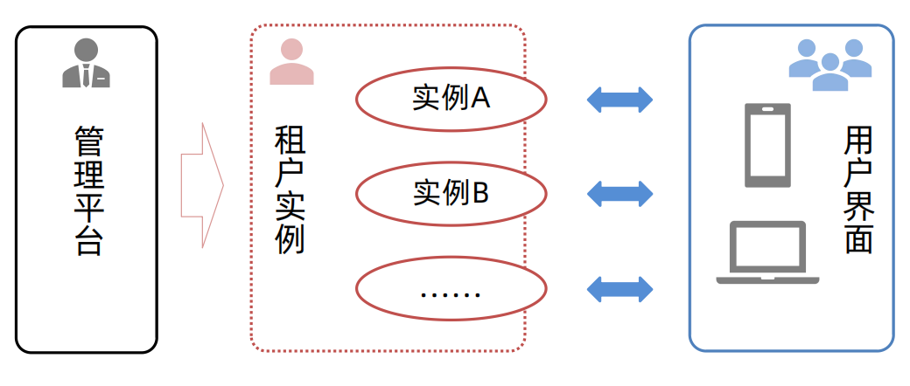
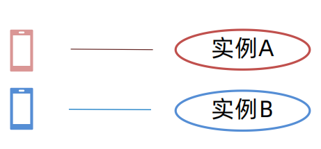
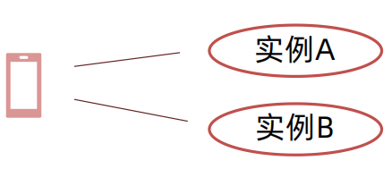

浅析Saas
浅析Saas
什么是SAAS平台？
SaaS是随着互联网技术的发展和应用软件的成熟，在21世纪开始兴起的一种完全创新的软件应用模式。
软件运营服务是（Software as a Service，简称SaaS）让用户能够通过互联网连接和使用基于云的应用程序。常见示例有电子邮件、日历和办公工具。 它不需要用户将软件产品安装在自己的电脑或服务器上。
SaaS提供完整的软件解决方案，用户可以从云服务提供商处以即用即付方式进行购买。为组织租用应用，组织用户即可通过互联网连接到该应用（通常使用 Web浏览器）。所有基础结构、中间件、应用软件和应用数据都位于服务提供商的数据中心内。服务提供商负责管理硬件和软件，并根据适当的服务协议确保应用和数据的可用性和安全性。SaaS让组织能够通过最低前期成本的应用快速建成投产。 因为它不需要用户将软件产品安装在自己的电脑或服务器上。而是按某种服务水平协议（SLA）直接通过网络向专门的提供商获取自己所需要的、带有相应软件功能的服务。
Saas平台的特点
可以使用先进的应用程序。 要向用户提供 SaaS 应用，无需购买、安装、更新或维护任何硬件、中间件或软件。SaaS让缺乏自行购买、部署和管理必需基础结构和软件所需资源的企业能够使用ERP和CRM等非常先进的企业应用程序。
只为自己使用的东西付费。由于SaaS服务将根据使用水平自动扩展和收缩，还能节省费用。
使用免客户端软件。用户可以从其Web浏览器直接运行大部分SaaS应用而无需下载和安装任何软件（部分应用需要插件）。这意味着无需为用户购买和安装特殊软件。
轻松增强员工移动性。SaaS能够轻松增强员工“移动性”，因为用户可以从任何连接到 Internet 的计算机或移动设备访问SaaS应用和数据。无需考虑将应用开发为可在不同类型的计算机和设备上运行，因为服务提供商已经完成了这部分工作。此外，无需学习专业知识即可处理移动计算带来安全问题。无论使用数据的设备是什么类型，谨慎选择的服务提供商都将确保数据的安全。
从任何位置访问应用数据。将数据存储到云后，用户即可通过任何连接到 Internet 的计算机或移动设备访问其信息。并且将应用数据存储到云后，用户的计算机或移动设备发生故障时不会丢失任何数据。
SAAS平台架构分为哪些？
1、呈现层
saas平台架构的呈现层可以使用的客户端可能都浏览器或本地客户端。如果是浏览器则需要Web界面技术、交互技术等技术(如：HTMl5技术、CSS3技术、Ajax技术等)的支持，如果是软件客户端则需要远程桌面技术、软件交互技术等技术支持。
2、调度层
saas平台架构的调度层体现分布式系统的特性之一。调度层首先负责识别并通过AAA认证每个用户请求，然后根据业务处理器的负载、业务特征进行合理的调度。通过应用这样的架构SaaS平台可以横向扩展。此外在存储、缓存等方面为了满足平台的横向扩展需求，调度层也必须具有良好的可扩展性。
3、业务层
saas平台架构的业务层负责接收调度层转发过来的请求，而且还要通过对接受到的请求执行真正的业务逻辑。一般来说业务逻辑的执行使用一台服务器就够了。因此业务层实际是由一排对等的服务器组成的，每台服务器都执行相同的业务逻辑。
4、数据层
saas平台架构的数据库集群用于处理存储关系性很强并且对事务性要求很高的业务数据，这类数据目前还要用传统的数据库集群技术来解决，saas平台架构的数据库集群主要是根据业务特征制定数据拆分方案。同时分布式数据库用于存放海量但关系性不强的数据(如：用户的操作日志等)。
SaaS产品的基本构成
一个SaaS产品通常由管理平台、租户实例、用户界面三个部分构成，分别对应SaaS产品的平台端、租户端、用户端三大功能模块。
目前SaaS产品大多采用“Web+移动端”的用户端组合模式， 在使用体验上与普通的软件产品相似，使用者并不需要关心其是否SaaS系统。SaaS用户端又分为“隔离模式”和“互通模式”。
隔离模式：一个用户端只对应一个实例，不同实例之间完全隔离，不能互相切换(例如：WebOA、企业邮箱)。
互通模式：同一用户端可关联多个实例，用户可在不同实例(企业)之间切换(例如：钉钉、企业微信)。
SaaS产品由管理端进行角色权限配置和平台设置、用户管理、实例管理、数据管理等一系列操作。
用户端设置账号功能和业务化功能， 主要包括注册开通、登录， 实例切换和标准功能和定制化功能(按实例配置)。
租户端可以管理自身基本信息，如名称、Logo等，给予管理实例的操作账号和角色权限，可以管理租约，进行缴费和续费等操作。有具体的业务后台，可以查看相关的数据统计等。
持续完善…
参考文档：
 微信
微信